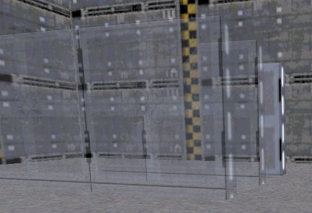

Below are three pictures which show three elevators on their side. The two in front have translucent 3dos. In this picture, all elevs have the 0x8 flag:
The effect ingame of giving all the elevs 0x8 is similar to looking at HOM through a translucent suface. In this next picture, none have the 0x8 flag:

As you can see, the result is terrible. The 0x8 flag must be given to the back elevator:
Now, the result isn't perfect. JK has problems with rendering through more than one translucent surface. This next set of examples uses only two elevs. Only the one in front is translucent. Here, both have the 0x8 flag:
Clearly, 0x8 should not be given to the translucent elev. In this picture, 0x8 is given only to the back elevator:
JK handles this flawlessly. There are no clipping problems at any angle. So to sumarize, the 0x8 Thing Flag should be given to all things which do not have translucent surfaces and are used for a level or as level architecture.